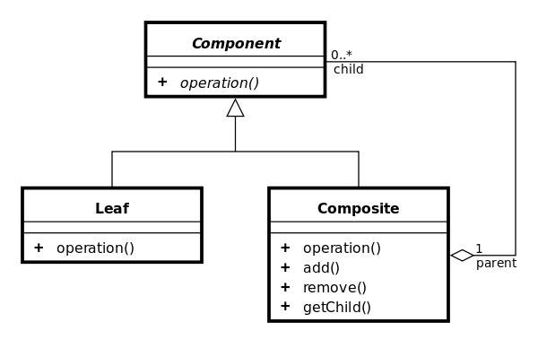

Компоновщик
Компоновщик (англ. Composite pattern) — структурный шаблон проектирования, объединяющий объекты в древовидную структуру для представления иерархии от частного к целому. Компоновщик позволяет клиентам обращаться к отдельным объектам и к группам объектов одинаково.
Цель
Паттерн определяет иерархию классов, которые одновременно могут состоять из примитивных и сложных объектов, упрощает архитектуру клиента, делает процесс добавления новых видов объекта более простым.
UML-диаграмма шаблона:
Пример на C#
class MainApp
{
static void Main()
{
// Create a tree structure
Composite root = new Composite("root");
root.Add(new Leaf("Leaf A"));
root.Add(new Leaf("Leaf B"));
Composite comp = new Composite("Composite X");
comp.Add(new Leaf("Leaf XA"));
comp.Add(new Leaf("Leaf XB"));
root.Add(comp);
root.Add(new Leaf("Leaf C"));
// Add and remove a leaf
Leaf leaf = new Leaf("Leaf D");
root.Add(leaf);
root.Remove(leaf);
// Recursively display tree
root.Display(1);
// Wait for user
Console.Read();
}
}
/// Component - компонент
/// объявляет интерфейс для компонуемых объектов
/// предоставляет подходящую реализацию операций по умолчанию,
/// общую для всех классов
/// объявляет интерфейс для доступа к потомкам и управлению ими
/// определяет интерфейс доступа к родителю компонента в рекурсивной структуре
/// и при необходимости реализует его. Описанная возможность необязательна
abstract class Component
{
protected string name;
// Constructor
public Component(string name)
{
this.name = name;
}
public abstract void Display(int depth);
}
/// Composite - составной объект
/// определяет поведеление компонентов, у которых есть потомки
/// хранит компоненты-потомоки
/// реализует относящиеся к управлению потомками операции и интерфейсе
/// класса Component
class Composite : Component
{
private ArrayList children = new ArrayList();
// Constructor
public Composite(string name) : base(name)
{
}
public void Add(Component component)
{
children.Add(component);
}
public void Remove(Component component)
{
children.Remove(component);
}
public override void Display(int depth)
{
Console.WriteLine(new String('-', depth) + name);
// Recursively display child nodes
foreach (Component component in children)
{
component.Display(depth + 2);
}
}
}
/// Leaf - лист
/// представляет листовой узел композиции и не имеет потомков
/// определяет поведение примитивных объектов в композиции
class Leaf : Component
{
// Constructor
public Leaf(string name) : base(name)
{
}
public override void Display(int depth)
{
Console.WriteLine(new String('-', depth) + name);
}
}